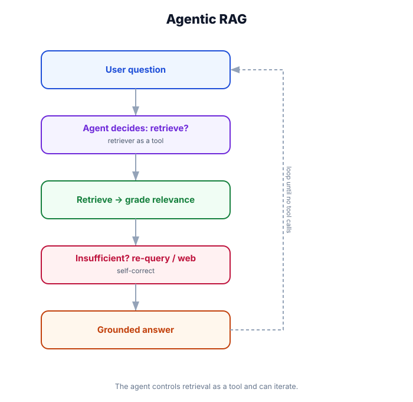

Agentic RAG — The Agent Decides When & How to Retrieve
What you'll learn: How agentic RAG differs from pipeline RAG, building agents that choose between multiple retrieval sources, implementing self-correction loops (retrieve → check relevance → re-retrieve if needed), and combining vector search with live web search.

↗ Open full size · ⬇ Edit in Excalidraw — labels use real LangChain classes.
An archivist follows a fixed process: look in drawer A, then drawer B, then write the report. A detective adapts: checks the case file first, if that's insufficient interviews witnesses, if that doesn't work searches public records, and only writes the report when they have enough evidence. Agentic RAG is the detective — retrieval decisions are made dynamically based on what the agent found so far.
Pipeline RAG vs. Agentic RAG
📥 Basic RAG
- Fixed pipeline: always retrieve then generate
- Single retrieval step
- One knowledge source
- No self-correction
🔍 2-Step RAG
- Rewrite → retrieve → rerank → generate
- Better retrieval quality
- Still a fixed pipeline
- Deterministic execution
🤖 Agentic RAG
- Agent decides when to retrieve
- Chooses which source to use
- Can retrieve multiple times
- Self-corrects bad results
Multi-Source Agentic RAG
from langchain.agents import create_agent
from langchain.chat_models import init_chat_model
from langchain.tools import tool
from langchain_community.tools import TavilySearchResults
# ── Define multiple retrieval sources as distinct tools ────────────────────────
# The agent reads the tool descriptions and decides which to call.
# Clear descriptions are critical — they teach the agent when to use each source.
@tool
def search_internal_docs(query: str) -> str:
"""Search the internal company knowledge base — product documentation,
engineering specs, policy documents, and internal procedures.
Use this for: company policies, product specs, internal processes, howtos.
Do NOT use for: current news, competitor info, general world knowledge.
Args:
query: The specific topic or question to search for internally.
"""
docs = internal_retriever.invoke(query)
if not docs:
return "No relevant internal documentation found."
return "\n\n---\n\n".join([
f"[{doc.metadata.get('source')}]\n{doc.page_content}"
for doc in docs[:4]
])
@tool
def search_customer_cases(query: str) -> str:
"""Search resolved support tickets and customer case history.
Use this for: similar past issues, known bugs, workarounds, customer FAQs.
Args:
query: The issue or symptom to search for in case history.
"""
cases = case_retriever.invoke(query)
return "\n\n".join([
f"[Case #{c.metadata.get('case_id')}] {c.page_content}"
for c in cases[:3]
])
@tool
def search_web(query: str) -> str:
"""Search the public web for current information, news, and external resources.
Use this for: recent events, competitor information, general knowledge,
anything that wouldn't be in internal documentation.
Prefer internal sources first — only use this if internal search fails.
Args:
query: The web search query.
"""
search = TavilySearchResults(max_results=3)
results = search.invoke(query)
return "\n\n".join([r["content"] for r in results])
@tool
def search_runbooks(query: str) -> str:
"""Search operational runbooks and incident playbooks.
Use this for: step-by-step procedures, incident response, deployment steps.
Args:
query: The operational task or incident type to look up.
"""
docs = runbook_retriever.invoke(query)
return "\n\n".join([d.page_content for d in docs[:2]])
# ── Agentic RAG: the model decides which tools to call ────────────────────────
agent = create_agent(
model=init_chat_model("openai:gpt-4o"),
tools=[search_internal_docs, search_customer_cases, search_runbooks, search_web],
system_prompt="""You are a technical support assistant with access to multiple knowledge sources.
ALWAYS search before answering. Strategy:
1. Start with search_internal_docs for product/policy questions
2. Use search_customer_cases for troubleshooting or "has this happened before?" questions
3. Use search_runbooks for step-by-step operational tasks
4. Only use search_web if internal sources don't have the answer
If the first search doesn't give you enough information, search again with different terms.
Always cite your sources in the response.""",
)Self-Correcting RAG — Relevance Checking
from langchain.chat_models import init_chat_model
from langchain_core.messages import HumanMessage, SystemMessage
from pydantic import BaseModel
from typing import Literal
grader_llm = init_chat_model("openai:gpt-4o-mini")
class RelevanceGrade(BaseModel):
score: Literal["relevant", "not_relevant"]
reason: str
grader = grader_llm.with_structured_output(RelevanceGrade)
def grade_relevance(question: str, document: str) -> bool:
"""Return True if the document is relevant to the question."""
result = grader.invoke([
SystemMessage("Grade whether the document is relevant to answering the user's question. Be strict."),
HumanMessage(f"Question: {question}\n\nDocument:\n{document[:500]}")
])
return result.score == "relevant"
@tool
def smart_search_docs(query: str) -> str:
"""Search internal docs with automatic relevance checking and re-retrieval.
If the initial results aren't relevant, automatically retries with
a rephrased query before returning results.
Args:
query: The question to search for.
"""
# Initial retrieval
docs = retriever.invoke(query)
# Grade each result
relevant_docs = [d for d in docs if grade_relevance(query, d.page_content)]
# If nothing relevant, try to rephrase and retry once
if not relevant_docs:
# Ask LLM to rephrase
rephrase_response = init_chat_model("openai:gpt-4o-mini").invoke([
SystemMessage("Rephrase this search query to find better results in a technical document database. Return ONLY the rephrased query, nothing else."),
HumanMessage(query)
])
rephrased = rephrase_response.content.strip()
# Retry with rephrased query
docs = retriever.invoke(rephrased)
relevant_docs = [d for d in docs if grade_relevance(query, d.page_content)]
if not relevant_docs:
return "I couldn't find relevant documentation for this question. Consider searching the web."
return "\n\n---\n\n".join([d.page_content for d in relevant_docs[:4]])Corrective RAG — Fallback to Web Search
from langchain.agents import create_agent
from langchain.chat_models import init_chat_model
from langchain.tools import tool
# Corrective RAG pattern: internal → web fallback is handled transparently
@tool
def search_knowledge_base_with_fallback(query: str) -> str:
"""Search the knowledge base. Automatically falls back to web search
if internal documentation doesn't contain relevant information.
Args:
query: The question to search for.
"""
# 1. Try internal docs first
docs = retriever.invoke(query)
relevant = [d for d in docs if grade_relevance(query, d.page_content)]
if relevant:
sources = "\n\n---\n\n".join([
f"[Internal source: {d.metadata.get('source')}]\n{d.page_content}"
for d in relevant[:4]
])
return f"Found in internal docs:\n{sources}"
# 2. Internal docs insufficient — fall back to web
print("[Corrective RAG] Internal docs insufficient, falling back to web search")
search = TavilySearchResults(max_results=4)
web_results = search.invoke(query)
if web_results:
web_content = "\n\n---\n\n".join([
f"[Web source: {r.get('url')}]\n{r['content']}"
for r in web_results
])
return f"Not found internally. Web search results:\n{web_content}"
return "No relevant information found in internal docs or web search."
# Simple agent using corrective RAG
agent = create_agent(
model=init_chat_model("openai:gpt-4o-mini"),
tools=[search_knowledge_base_with_fallback],
system_prompt="Answer questions using the knowledge base. Always cite your sources.",
)Use basic RAG for simple QA over a single well-curated knowledge base. Use 2-step RAG when retrieval quality is the bottleneck — vague queries, multi-turn conversations. Use agentic RAG when you have multiple sources and the agent needs to choose, or when questions are complex enough to need iterative retrieval. Use corrective RAG when internal knowledge gaps are common and you need a graceful fallback.
When an agent searches multiple sources and synthesizes results, it can accidentally attribute facts from one source to another, or blend information in ways that aren't supported by either source. Always include source citations in your system prompt and validate them. In high-stakes deployments, add an output guardrail that checks whether quoted text appears in the retrieved documents.
🏥 Medical Reference Assistant
A clinical decision support tool uses agentic RAG with three sources: a vector store of clinical guidelines, a database of drug interactions, and a live web search for breaking pharmacovigilance alerts. When a clinician asks about a novel drug combination, the agent first checks guidelines (authoritative, current), then drug interactions (structured database), then web search (recent safety signals). If the relevance grader finds the clinical guideline outdated for this specific drug combo, it falls back to web search and clearly labels the source as external. The multi-source, self-correcting design is critical in a domain where outdated information can cause patient harm.
Agentic RAG lets the model choose which source to search, when to search, and whether to search again. Implement by exposing retrieval sources as distinct tools with clear descriptions. Add self-correction by grading retrieved documents for relevance and re-retrieving if needed. Use corrective RAG (internal → web fallback) for open-domain questions. The quality of tool descriptions directly determines how well the agent routes — treat them as documentation, not afterthoughts.